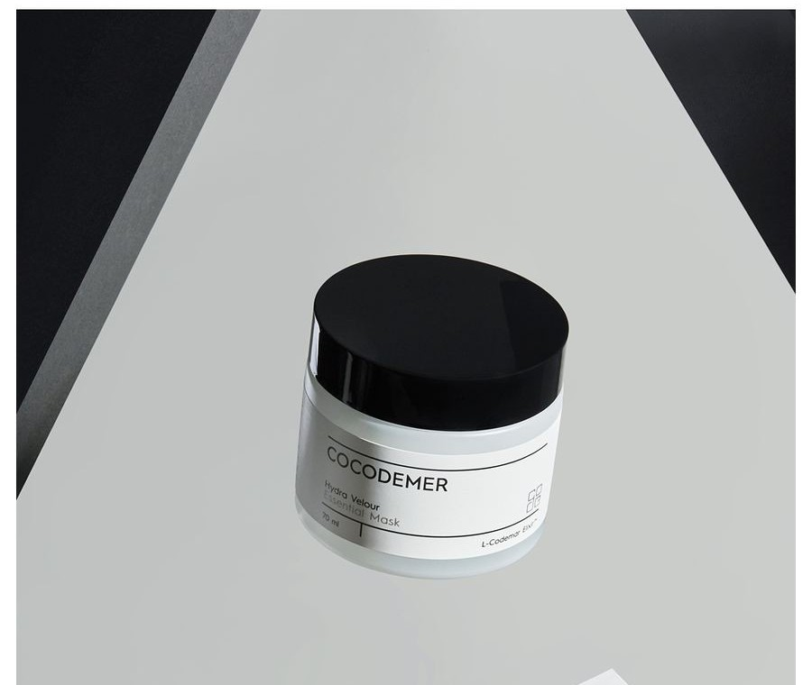
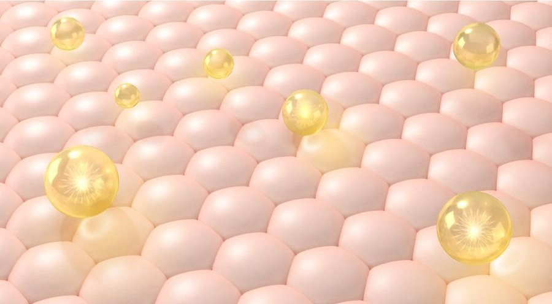
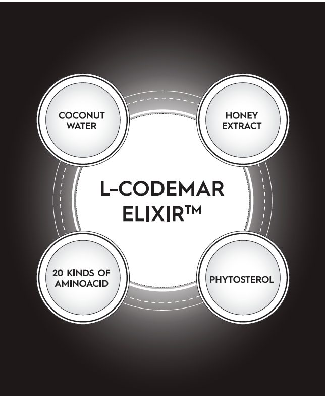
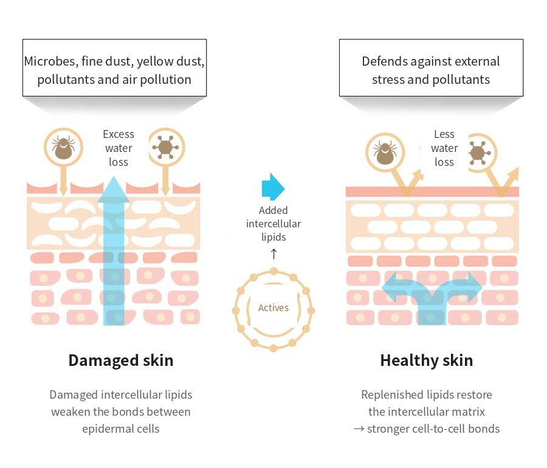

COCODEMER Hydra Velour Essential Mask
| Volume | 70ml |
|---|---|
| Suitable for | All skin types |
| Key technology | L-CODEMAR ELIXIR™ |
| Manufacturer · Responsible distributor | JUNGCOS CO., LTD. / COCODEMER CO., LTD. |
This product is not yet listed on the Smart Store. For purchases, please use the store, or contact us through the B2B inquiry.
COCODEMER Hydra Velour Essential Mask
A richly nourishing essential mask with a silky texture
An intensely hydrating essential mask that replenishes tired-looking skin from within
A cool burst of moisture at the fingertips meets silky oils for a smooth, hydrated finish, with no stickiness.
Ultra-fine encapsulated collagen peptide, firming peptide, squalane and active vitamins sit alongside a range of botanical extracts. Together they carry resilient nourishment deep into the skin, leaving tired skin healthy and full of life.
Bulky Gel Network stabilisation of water-soluble humectants turns a skin-friendly oil base into liposomes. These form a silky veil of moisture that blocks water loss and helps strengthen the skin barrier.
Bulky Hydrogel Emulsion is reduced to nano particles for highly efficient penetration. Collagen and firming peptides, squalane and safflower seed oil are encapsulated and carried deep into the skin, holding elasticity and skin health in place.
A silky oil base bursts at the fingertips and meets a cool wave of moisture, leaving skin smooth and hydrated with no stickiness.
Key Active Code
- MoMoisturizing
- AwAnti Wrinkles
- WhWhitening
- TbTrouble relief
- BsBase
Paired with glycerin, a skin-friendly humectant derived from coconut oil, it brings luminosity to the skin and forms a protective veil of moisture that blocks water loss. Hydration holds, and the skin beneath stays in healthy condition.

A topical firming peptide stimulates the production of collagen and elastin. Where their decline has cost the skin its firmness, it helps restore elasticity and improve wrinkles.
A derivative of water-soluble vitamin B3. It inhibits tyrosinase activation to block melanin formation and suppress pigmentation, and it reduces the compounds that oxidise collagen — brightening the skin tone and helping prevent dark spots.
* The above describes the ingredients, not the finished product.
See the ingredient reference →
L-CODEMAR ELIXIR™
COCODEMER's proprietary technology.
Our multi-layer nano-gel emulsion encapsulation technology holds the core actives — coconut water, phytosterols, 20 amino acids and honey extract — in a stable complex. That complex is then built into a skin-friendly liposomal form that mirrors the structure of skin itself, for the most efficient delivery into the skin.
L-Codemar Elixir™ strengthens the bonds between skin cells. It restores a damaged barrier and forms a strong protective film, so hydration holds for longer.


How To Use
- At the final step of your skincare routine, spread evenly over the whole face and allow to absorb.
- Once it has absorbed, leave it on overnight.
- Rinse off lightly with lukewarm water the following morning.
An intensely hydrating essential mask that replenishes tired-looking skin from within
A cool burst of moisture at the fingertips meets silky oils for a smooth, hydrated finish, with no stickiness.
Ultra-fine encapsulated collagen peptide, firming peptide, squalane and active vitamins sit alongside a range of botanical extracts. Together they carry resilient nourishment deep into the skin, leaving tired skin healthy and full of life.
Bulky Gel Network stabilisation of water-soluble humectants turns a skin-friendly oil base into liposomes. These form a silky veil of moisture that blocks water loss and helps strengthen the skin barrier.
Bulky Hydrogel Emulsion is reduced to nano particles for highly efficient penetration. Collagen and firming peptides, squalane and safflower seed oil are encapsulated and carried deep into the skin, holding elasticity and skin health in place.
A silky oil base bursts at the fingertips and meets a cool wave of moisture, leaving skin smooth and hydrated with no stickiness.
Paired with glycerin, a skin-friendly humectant derived from coconut oil, it brings luminosity to the skin and forms a protective veil of moisture that blocks water loss. Hydration holds, and the skin beneath stays in healthy condition.
A topical firming peptide stimulates the production of collagen and elastin. Where their decline has cost the skin its firmness, it helps restore elasticity and improve wrinkles.
A derivative of water-soluble vitamin B3. It inhibits tyrosinase activation to block melanin formation and suppress pigmentation, and it reduces the compounds that oxidise collagen — brightening the skin tone and helping prevent dark spots.
* The above describes the ingredients, not the finished product.
L-CODEMAR ELIXIR™
COCODEMER's proprietary technology. Our multi-layer nano-gel emulsion encapsulation technology holds the core actives — coconut water, phytosterols, 20 amino acids and honey extract — in a stable complex. That complex is then built into a skin-friendly liposomal form that mirrors the structure of skin itself, for the most efficient delivery into the skin. L-Codemar Elixir™ strengthens the bonds between skin cells. It restores a damaged barrier and forms a strong protective film, so hydration holds for longer.
①At the final step of your skincare routine, spread evenly over the whole face and allow to absorb. ②Once it has absorbed, leave it on overnight. ③Rinse off lightly with lukewarm water the following morning.
| Net volume or weight | 70ml |
|---|---|
| Suitable for | All skin types |
| Shelf life / period after opening | 30 months from date of manufacture; use within 12 months of opening |
| How to use | As the last step of your skincare routine, take a suitable amount and smooth it gently along the skin's texture. Leave on overnight without rinsing and cleanse the following morning. |
| Cosmetics manufacturer | JUNGCOS CO., LTD. |
| Responsible distributor | COCODEMER CO., LTD. |
| Country of origin | Republic of Korea |
| Full ingredients (INCI) | Cocos Nucifera (Coconut) Water, Water, Caprylic/Capric Triglyceride, Methylpropanediol, Glycerin, Dimethicone, Butylene Glycol, 1,2-Hexanediol, Betaine, Niacinamide, Raffinose, Centella Asiatica Extract, Ficus Carica (Fig) Fruit Extract, Panthenol, Honey Extract, Carthamus Tinctorius (Safflower) Seed Oil, Hydrogenated Lecithin, Oenothera Biennis (Evening Primrose) Oil, Sodium Hyaluronate, Acetyl Hexapeptide-8, Adenosine, Alanine, Ammonium Acryloyldimethyltaurate/VP Copolymer, Arginine, Aspartic Acid, Bioflavonoids, Carbomer, Carnitine, Carnosine, Ceramide NP, Cetearyl Alcohol, Cetyl Ethylhexanoate, Citrulline, Creatine, Dimethiconol, Disodium EDTA, Ethylhexylglycerin, Glucosyl Hesperidin, Glutamic Acid, Glutamine, Glycine, Hydrogenated Phosphatidylcholine, Inositol, Isoleucine, Leucine, Methionine, Myristic Acid, Neopentyl Glycol, Diheptanoate, Ornithine, Palmitic Acid, Palmitoyl Pentapeptide-4, Phenylalanine, Phytosterols, Polyglyceryl-10, Myristate, Polyglyceryl-2 Stearate, Polyquaternium-51, Polysorbate 20, Proline, Propanediol, Serine, Squalane, Stearic Acid, Threonine, Tranexamic Acid, Trehalose, Tromethamine, Tryptophan, Tyrosine, Valine, Fragrance (Parfum) |
| Functional cosmetic approval | Helps brighten the skin. Helps improve skin wrinkles. |
| Precautions | 1. If red spots, swelling, itching or other unusual symptoms or side effects appear on the area of use during or after use, or following exposure to direct sunlight, consult a specialist. 2. Refrain from using on broken or damaged skin. 3. Precautions for storage and handling a) Keep out of reach of children. b) Store away from direct sunlight. c) Avoid the eye area during use. |
| Quality guarantee | In the event of a defect, compensation is provided in accordance with the Consumer Dispute Resolution Standards published by the Korea Fair Trade Commission. |
| Customer enquiries | 010-3307-9341 / cocodemer@cocodemer.co.kr |
* Required disclosure under Korean cosmetics labelling and advertising rules. This is a reference translation; for the certified ingredient declaration, CPSR or CoA, please contact us through the B2B enquiry.